and
and  ; a 3 dB coupler has
; a 3 dB coupler has  .
.
Coupled-mode equations
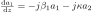
, (Marcatili 1969). With detuning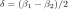
and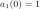
: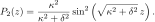
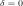
) — the same algebra as Rabi oscillations with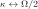
,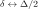
.Supermode picture
Symmetric and antisymmetric modes of the coupled structure propagate with
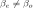
; launching into one guide excites both equally; after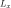
they are in antiphase and the power sits in the other guide. Transfer matrix (lossless, symmetric):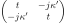
,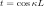
,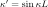
— a unitary like the beam splitter.Worked example
Two 500×220 nm strips with 200 nm gap:
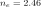
,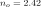
at 1550 nm: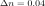
,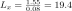
µm; 3 dB length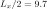
µm (plus bend contributions). Wavelength dependence: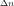
grows with (less confinement), so the split ratio drifts across the C band — broadband alternatives are MMIs and adiabatic couplers.
(less confinement), so the split ratio drifts across the C band — broadband alternatives are MMIs and adiabatic couplers.
Engineering applications
Power taps and splitters, ring-resonator bus coupling, MZI splitters, polarisation splitters (TE/TM couple differently), linear-optical quantum circuits (HOM interference on chip), wavelength-selective couplers.
Pitfall
Fabrication changes the gap and width, so  varies exponentially with gap: a ±10 nm gap error can change the splitting ratio by tens of percent.
varies exponentially with gap: a ±10 nm gap error can change the splitting ratio by tens of percent.